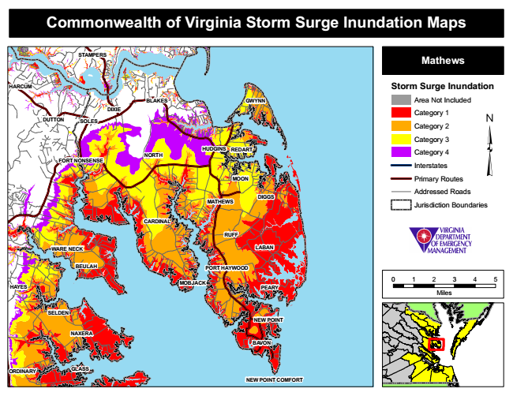

Commonwealth of Virginia Storm Surge Inundation Maps
STAMPERS
Mathews
HARCUM
Storm Surge Inundation
Area Not Included
Category 1 DUTTON
Category 2
Category 3
Category 4
Interstates
Primary Routes
Addressed Roads
Jurisdiction Boundaries
0 1 2 3 4 5
Miles
ORDINARY
BLAKES
BEULAH
MOBJACK
GWYNN
GLASS
DIXIE
SOLES
HUDGINS
REDART
FORT NONSENSE
NORTH
MOON
MATHEWS
DIGGS
CARDINAL
RUFF
WARE NECK
LABAN
PORT HAYWOOD
HAYES
PEARY
SELDEN
NEW POINT
NAXERA
BAVON
NEW POINT COMFORT